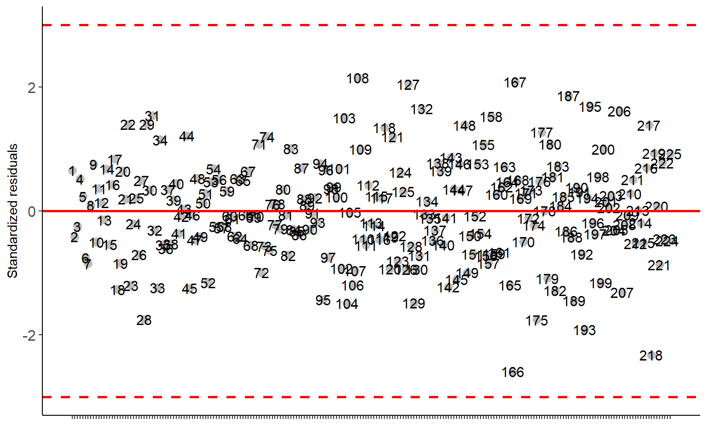
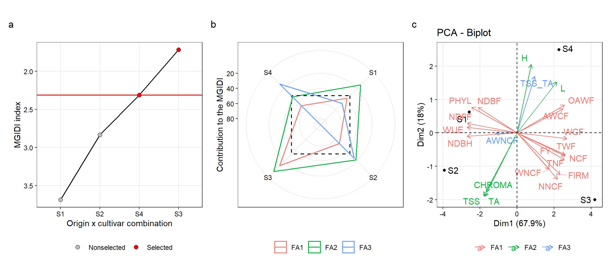

Analysis
1 Libraries
To reproduce the examples of this material, the R packages metan, rio, broom, and purrr are needed.
library(metan) # MGIDI index
library(rio) # data importation
library(broom) # convert statistical objects into tidy tibbles
library(purrr) # Manipulate lists
library(tidyverse) # plots, data manipulation
library(kableExtra) # html tables
library(emmeans) # pairwise multiple comparison
library(AgroR) # pairwise multiple comparison
library(factoextra)
# set a theme plot
my_theme <-
theme_bw() +
theme(legend.title = element_blank(),
axis.title = element_text(color = "black"),
axis.text = element_text(color = "black"),
panel.grid.minor = element_blank())2 Simulated data
2.1 A simple example
Here, we use a simple example with only 5 treatments and 3 traits to show how the MGIDI index can be used even with few traits/treatments.
df <-
g_simula(ngen = 5,
nrep = 3,
nvars = 3,
seed = c(3, 20, 40)) %>%
replace_string(GEN, pattern = "H", replacement = "T")
## Warning: 'gen_eff = 20' recycled for all the 3 traits.
## Warning: 'rep_eff = 5' recycled for all the 3 traits.
## Warning: 'res_eff = 5' recycled for all the 3 traits.
## Warning: 'intercept = 100' recycled for all the 3 traits.2.1.1 Pairwise multiple comparisons
v1_mod <- aov(V1 ~ REP + GEN, data = df)
v2_mod <- aov(V2 ~ REP + GEN, data = df)
v3_mod <- aov(V3 ~ REP + GEN, data = df)
anovas <-
list(v1 = tidy(v1_mod),
v2 = tidy(v2_mod),
v3 = tidy(v3_mod)) %>%
rbind_fill_id(.id = "Traits")
anovas
v1_means <- emmeans(v1_mod, ~ GEN)
v2_means <- emmeans(v2_mod, ~ GEN)
v3_means <- emmeans(v3_mod, ~ GEN)
# plots
p1 <-
plot(v1_means,
comparisons = TRUE,
CIs = FALSE,
xlab = "Mean",
ylab = "Treatments") +
geom_vline(xintercept = mean(df$V1)) +
my_theme
p2 <-
plot(v2_means,
comparisons = TRUE,
CIs = FALSE,
xlab = "Mean",
ylab = "Treatments") +
geom_vline(xintercept = mean(df$V2)) +
my_theme
p3 <-
plot(v3_means,
comparisons = TRUE,
CIs = FALSE,
xlab = "Mean",
ylab = "Treatments") +
geom_vline(xintercept = mean(df$V2)) +
my_theme2.1.2 The MGIDI index
The MGIDI index is computed with the function mgidi(). The function has the following arguments.
.data: An object fitted with the functiongafem(),gamem()or a two-way table with BLUPs/means for treatments in each trait (treatments in rows and traits in columns). In the last case, row names must contain the treatments’ names.use_data: Define which data to use if.datais an object of classgamem. Defaults to"blup"(the BLUPs for genotypes). Use"pheno"to use phenotypic means instead BLUPs for computing the index.SI: An integer (0-100). The selection intensity in percentage of the total number of genotypes/treatments.mineval: The minimum value so that an eigenvector is retained in the factor analysis. Defaults to 1.ideotype: A vector of length nvar where nvar is the number of variables used to plan the ideotype. Use'h'to indicate the traits in which higher values are desired or'l'to indicate the variables in which lower values are desired. For example,ideotype = c("h, h, h, h, l")will consider that the ideotype has higher values for the first four traits (following the order of columns in.data) and lower values for the last trait. If.datais a model fitted with the functionsgafem()orgamem(), the order of the traits will be the declared in the argumentrespin those functions.weightsOptional weights to assign for each trait in the selection process. It must be a numeric vector of length equal to the number of traits in.data. By default (NULL) a numeric vector of weights equal to 1 is used, i.e., all traits have the same weight in the selection process. It is suggested weights ranging from 0 to 1. The weights will then shrink the ideotype vector toward 0. This is useful, for example, to prioritize grain yield rather than a plant-related trait in the selection process.use: The method for computing covariances in the presence of missing values. Defaults tocomplete.obs, i.e., missing values are handled by casewise deletion.verbose: Ifverbose = TRUE(Default) then some results are shown in the console.
In the following example, the MGIDI index is computed with the predicted values from a multivariate analysis of variance model. Three scenarios are shown: (i) for all traits higher values are better; (ii) lower values better for the first two traits and higher values better for the last trait; and (iii) lower values better for all the traits.
man <- manova(cbind(V1, V2, V3) ~ REP + GEN, data = df)
summary(man)
## Df Pillai approx F num Df den Df Pr(>F)
## REP 2 1.3052 4.3832 6 14 0.01068 *
## GEN 4 2.6178 13.6999 12 24 6.053e-08 ***
## Residuals 8
## ---
## Signif. codes: 0 '***' 0.001 '**' 0.01 '*' 0.05 '.' 0.1 ' ' 1
# predict the mean values
# compute a two-way table with genotypes in rows and traits in columns
pred_mat <-
predict(man) %>%
as.data.frame() %>%
mutate(TRAT = df$GEN) %>%
mean_by(TRAT) %>%
column_to_rownames("TRAT")
# higher values for all traits are better
ind <- mgidi(pred_mat,
ideotype = c("h, h, h"), # default
verbose = FALSE,
mineval = 0.5) # retains two factors
p4 <-
plot(ind,
x.lab = "Treatments",
y.lab = "MGIDI index",
radar = FALSE) +
my_theme
ind$sel_dif
# lower values for the first two traits
# higher values for the last
ind2 <- mgidi(pred_mat,
ideotype = c("l, l, h"),
verbose = FALSE,
mineval = 0.5) # retains two factors
p5 <-
plot(ind2,
x.lab = "Treatments",
y.lab = "MGIDI index",
radar = FALSE) +
my_theme
ind2$sel_dif
# lower values for all the traits
ind3 <- mgidi(pred_mat,
ideotype = c("l, l, l"),
verbose = FALSE,
mineval = 0.5) # retains two factors
p6 <-
plot(ind3,
x.lab = "Treatments",
y.lab = "MGIDI index",
radar = FALSE) +
my_theme
ind3$sel_difarrange_ggplot((p1 + p2 + p3),
(p4 + p5 + p6),
nrow = 2,
heights = c(0.6, 1),
tag_levels = "a",
guides = "collect")Figure 2.1: Pairwise comparisons for V1 (a), V2 (b), V3 (c), and the MGIDI index for three selection strategies, namely, desired higher values for all traits (c), lower values for V1 and V2 and higher values for V3 (d), and lower values for all traits (e).
ggsave("figs/fig1.pdf", width = 10, height = 5)2.2 A complex example
2.2.1 Pairwise multiple comparisons
In the following example, we will simulate data on 10 traits accessed in 75 treatments using the function g_simula() from metan package.
# simulate data
df_g <-
g_simula(ngen = 75,
nrep = 3,
nvars = 10,
seed = 1:10)
## Warning: 'gen_eff = 20' recycled for all the 10 traits.
## Warning: 'rep_eff = 5' recycled for all the 10 traits.
## Warning: 'res_eff = 5' recycled for all the 10 traits.
## Warning: 'intercept = 100' recycled for all the 10 traits.
# data in a 'long' format
df_ge_long <-
pivot_longer(df_g,
cols = -c(GEN:REP),
names_to = "trait")
# compute an ANOVA for each trait
models_ge <-
df_ge_long %>%
group_by(trait) %>%
doo(~aov(value ~ REP + GEN, data = .))
# obtain an anova table
anovas_ge <- models_ge$data %>% map_dfr(~.x %>% tidy(), .id = "TRAIT")
anovas_ge %>% filter(term == "GEN")All traits with significant treatment effect. In this case, It would be reasonable to include a pairwise comparasion. We could obtain all the P-values using pwpm(), and look at each one of the 2775 (\(75!/ (2! \times (75 - 2)!\)) comparisions individually.
# example for V1
model_v1 <- models_ge$data[[1]]
means_v1 <- emmeans(model_v1, ~ GEN)
pairs <- pwpm(means_v1)Definetively, this is not the better option. Another way to depict comparisons graphically via the comparisons argument in plot.emm():
p7 <-
plot(means_v1, comparisons = TRUE, CIs = FALSE) +
my_theme
p7Figure 2.2: Pairwise comparisons based on Tukey adjustment
The red arrows are for the comparisons among genotype’s means. If an arrow from one mean overlaps an arrow from another group, the difference is not “significant,” based on the adjust setting (which defaults to “tukey”).
An alternative is the Pairwise P-value plot displaying all the P-values in pairwise comparisons. Each comparison is associated with a vertical line segment that joins the scale positions of the two means being compared, and whose horizontal position is determined by the P-value of that comparison.
# shows only 'significant' (P-value < 0.05)
p8 <- pwpp(means_v1) + scale_x_continuous(limits = c(0, 0.05))
## Scale for 'x' is already present. Adding another scale for 'x', which will
## replace the existing scale.
p8
## Warning: Removed 4350 rows containing missing values (geom_point).
## Warning: Removed 4350 rows containing missing values (geom_segment).
## Warning: Removed 5550 rows containing missing values (geom_point).
## Warning: Removed 75 rows containing missing values (geom_label).
## Warning: Removed 5550 rows containing missing values (geom_point).Figure 2.3: Pairwise P-value plot
Another way to depict comparisons is by compact letter displays, whereby two means sharing one or more grouping symbols are not “significantly” different. Here, I use the package ExpDes to generate compact letter displays based on Tukey test.
plot <-
with(df_g,
DBC(GEN, REP, V1))
##
## -----------------------------------------------------------------
## Normality of errors
## -----------------------------------------------------------------
## Method Statistic p.value
## Shapiro-Wilk normality test(W) 0.9952492 0.7118349
## As the calculated p-value is greater than the 5% significance level, hypothesis H0 is not rejected. Therefore, errors can be considered normal
##
## -----------------------------------------------------------------
## Homogeneity of Variances
## -----------------------------------------------------------------
## Method Statistic p.value
## Bartlett test(Bartlett's K-squared) 80.00464 0.2962211
## As the calculated p-value is greater than the 5% significance level, hypothesis H0 is not rejected. Therefore, the variances can be considered homogeneous
##
## -----------------------------------------------------------------
## Independence from errors
## -----------------------------------------------------------------
## Method Statistic p.value
## Durbin-Watson test(DW) 2.580335 0.2531596
## As the calculated p-value is greater than the 5% significance level, hypothesis H0 is not rejected. Therefore, errors can be considered independent
##
## -----------------------------------------------------------------
## Additional Information
## -----------------------------------------------------------------
##
## CV (%) = 4.84
## MStrat/MST = 0.28
## Mean = 102.6011
## Median = 102.4724
## Possible outliers = No discrepant point
##
## -----------------------------------------------------------------
## Analysis of Variance
## -----------------------------------------------------------------
## Df Sum Sq Mean.Sq F value Pr(F)
## trat 74 25647.458 346.58726 14.04936 1.358273e-40
## bloco 2 1702.585 851.29272 34.50824 4.999272e-13
## Residuals 148 3651.051 24.66926
## As the calculated p-value, it is less than the 5% significance level. The hypothesis H0 of equality of means is rejected. Therefore, at least two treatments differ
##
## -----------------------------------------------------------------
## Multiple Comparison Test
## -----------------------------------------------------------------
## resp groups
## H18 124.87425 a
## H6 123.16768 ab
## H4 120.42818 abc
## H7 118.92632 abcd
## H41 118.41918 abcde
## H21 117.79055 abcde
## H29 117.66426 abcde
## H72 116.36309 abcdef
## H68 116.08235 abcdef
## H61 115.71047 abcdefg
## H70 115.55697 abcdefgh
## H52 114.75437 abcdefghi
## H46 114.42753 abcdefghi
## H43 114.35004 abcdefghij
## H23 113.87899 abcdefghijk
## H8 113.67386 abcdefghijk
## H35 113.66349 abcdefghijk
## H15 112.14765 abcdefghijkl
## H17 111.41472 abcdefghijklm
## H59 110.53092 abcdefghijklmn
## H50 110.31151 abcdefghijklmno
## H42 110.24694 abcdefghijklmno
## H49 109.60600 abcdefghijklmnop
## H13 109.38477 abcdefghijklmnop
## H36 109.26114 abcdefghijklmnop
## H37 109.07550 abcdefghijklmnop
## H44 108.22841 abcdefghijklmnop
## H20 108.12878 abcdefghijklmnop
## H9 106.44219 bcdefghijklmnopq
## H3 105.77859 cdefghijklmnopq
## H16 105.37972 cdefghijklmnopqr
## H39 105.28350 cdefghijklmnopqr
## H32 105.00382 cdefghijklmnopqrs
## H45 104.15329 cdefghijklmnopqrst
## H65 103.25842 cdefghijklmnopqrstu
## H58 102.66058 defghijklmnopqrstu
## H19 102.09905 defghijklmnopqrstuv
## H75 101.51554 efghijklmnopqrstuvw
## H48 101.19846 efghijklmnopqrstuvw
## H67 101.13853 efghijklmnopqrstuvw
## H63 100.29521 fghijklmnopqrstuvw
## H51 100.09121 fghijklmnopqrstuvwx
## H31 100.01662 fghijklmnopqrstuvwx
## H53 98.64119 ghijklmnopqrstuvwxy
## H28 98.48811 ghijklmnopqrstuvwxy
## H71 98.32443 hijklmnopqrstuvwxy
## H2 97.98150 ijklmnopqrstuvwxy
## H33 97.95390 ijklmnopqrstuvwxy
## H74 97.00687 jklmnopqrstuvwxy
## H40 96.92996 klmnopqrstuvwxy
## H60 96.89532 klmnopqrstuvwxy
## H57 96.53602 klmnopqrstuvwxy
## H26 96.06602 lmnopqrstuvwxy
## H14 95.71283 lmnopqrstuvwxy
## H73 94.88222 lmnopqrstuvwxy
## H64 94.57512 mnopqrstuvwxy
## H30 94.44762 mnopqrstuvwxy
## H11 93.62437 nopqrstuvwxy
## H25 93.37715 nopqrstuvwxy
## H1 93.35092 nopqrstuvwxy
## H66 93.14729 opqrstuvwxy
## H54 92.68082 pqrstuvwxy
## H62 90.35282 qrstuvwxy
## H47 90.27258 qrstuvwxy
## H55 89.88984 qrstuvwxy
## H24 89.56167 qrstuvwxy
## H22 88.29500 rstuvwxy
## H5 87.88859 stuvwxy
## H56 87.59956 tuvwxy
## H38 86.66210 uvwxy
## H12 86.58902 uvwxy
## H34 85.23154 vwxy
## H10 84.31629 wxy
## H27 82.75361 xy
## H69 82.66512 yNow, we simply choose one of the above options and apply it to the other nine traits.
2.2.2 The MGIDI index
In the following example, the MGIDI index is computed with the predicted values from a multivariate analysis of variance model. Three scenarios are shown: (i) for all traits higher values are better; (ii) higher values better for the first seven traits and lower values better for the last three traits; and (iii) lower values better for all the traits.
man_complex <-
manova(cbind(V1,V2,V3,V4,V5,V6,V7,V8,V9,V10) ~ REP + GEN,
data = df_g)
summary(man_complex)
## Df Pillai approx F num Df den Df Pr(>F)
## REP 2 1.3483 28.967 20 280 < 2.2e-16 ***
## GEN 74 8.8813 15.878 740 1480 < 2.2e-16 ***
## Residuals 148
## ---
## Signif. codes: 0 '***' 0.001 '**' 0.01 '*' 0.05 '.' 0.1 ' ' 1
# generate a two-way table with predicted values in rows and traits in columns
pred_complex <- cbind(df_g[, 1:2], predict(man_complex))
mat_g <-
pred_complex %>%
mean_by(GEN) %>%
column_to_rownames("GEN")
# higher values for all traits are better
ind4 <- mgidi(mat_g,
ideotype = rep("h", 10), # default
verbose = FALSE)
p9 <- plot(ind4)
p9ind4$sel_dif
# higher values desired for the first 7 traits
# lower values desired for the last 3 traits
ind5 <- mgidi(mat_g,
ideotype = c(rep("h", 7), rep("l", 3)),
verbose = FALSE)
p10 <- plot(ind5)
p10ind5$sel_dif
# lower values for all the traits
ind6 <- mgidi(mat_g,
ideotype = rep("l", 10), # default
verbose = FALSE)
p11 <- plot(ind6)
p11ind6$sel_dif3 Weigths
df <-
g_simula(ngen = 5,
nrep = 3,
nvars = 3,
seed = c(5, 2, 32)) %>%
mean_by(GEN) |>
column_to_rownames("GEN")
## Warning: 'gen_eff = 20' recycled for all the 3 traits.
## Warning: 'rep_eff = 5' recycled for all the 3 traits.
## Warning: 'res_eff = 5' recycled for all the 3 traits.
## Warning: 'intercept = 100' recycled for all the 3 traits.
# equal weights
equal_weigths <- mgidi(df, verbose = FALSE)
dfequal_weigths$scores_ideequal_weigths$scores_genequal_weigths$MGIDI
# higuer weight for V2
# see how H5 becomes the first ranked
wv2 <- mgidi(df,
weights = c(1, 15, 1),
verbose = FALSE)
dfwv2$scores_idewv2$scores_genwv2$MGIDI4 Real data example (Strawberry)
rm(list = ls())
# set a theme plot
my_theme <-
theme_bw() +
theme(legend.title = element_blank(),
axis.title = element_text(color = "black"),
axis.text = element_text(color = "black"),
panel.grid.minor = element_blank())
df <-
import("https://bit.ly/strawberry_data", setclass = "tbl") %>%
metan::as_factor(1:4)
str(df)
## tibble [64 × 26] (S3: tbl_df/tbl/data.frame)
## $ REP : Factor w/ 4 levels "1","2","3","4": 1 1 1 1 1 1 1 1 1 1 ...
## $ SUB : Factor w/ 4 levels "S1","S2","S3",..: 1 1 1 1 2 2 2 2 3 3 ...
## $ CUL : Factor w/ 2 levels "ALB","CAM": 2 2 1 1 2 2 1 1 2 2 ...
## $ ORI : Factor w/ 2 levels "IMP","NAC": 2 1 2 1 2 1 2 1 2 1 ...
## $ NNCF : num [1:64] 3.88 6.13 1.2 2.86 4.67 ...
## $ WNCF : num [1:64] 21.4 36.2 10.3 50.1 41.1 ...
## $ AWNCF : num [1:64] 5.51 5.92 8.62 17.55 8.81 ...
## $ WUE : num [1:64] 93.4 125.5 136.3 94.2 190.5 ...
## $ NDBF : int [1:64] 82 61 69 44 86 61 71 44 54 55 ...
## $ NDFF : int [1:64] 92 83 82 70 92 89 82 70 69 70 ...
## $ NDBH : int [1:64] 81 82 78 69 108 85 88 72 74 79 ...
## $ PHYL : num [1:64] 162 185 189 180 124 ...
## $ TA : num [1:64] 1.38 1.72 1.77 1.4 1.51 1.34 1.47 1.49 1.33 1.6 ...
## $ NCF : num [1:64] 28.1 24 19.6 24.9 12.3 ...
## $ TNF : num [1:64] 32 30.1 20.8 27.7 17 ...
## $ WCF : num [1:64] 425 307 330 372 148 ...
## $ TWF : num [1:64] 446 343 340 423 189 ...
## $ AWCF : num [1:64] 15.1 12.8 16.8 15 12 ...
## $ OAWF : num [1:64] 13.9 11.4 16.4 15.2 11.1 ...
## $ FY : num [1:64] 33469 25713 25509 31698 14170 ...
## $ TSS : num [1:64] 6.77 8.27 7.25 8.35 7.2 7.13 7.45 8.4 6.8 7.88 ...
## $ TSS_TA: num [1:64] 4.89 4.79 4.1 5.98 4.76 5.34 5.08 5.64 5.13 4.92 ...
## $ FIRM : num [1:64] 1.53 1.95 2.07 1.93 1.73 1.92 1.71 1.99 0.95 1.69 ...
## $ L : num [1:64] 57 48.7 55.2 53.2 53.4 ...
## $ CHROMA: num [1:64] 40.5 47.1 46 47 43.7 ...
## $ H : num [1:64] 42.4 40.7 43.2 42.7 42.2 ...4.1 Multivariate Analysis of Variance
The function manova() computes a multivariate analysis of variance df.
man_straw <-
manova(
cbind(NNCF,WNCF,AWNCF,WUE,NDBF,NDFF,NDBH,PHYL,TA,NCF,TNF
,WCF, TWF,AWCF,OAWF,FY,TSS,TSS_TA,FIRM,L,CHROMA,H) ~ SUB*ORI*CUL,
data = df)
tidy(man_straw, intercept = TRUE)Since the only significant interaction was ORI:CUL, we will use the MGIDI index to analyze the interaction term and the main effect of substrat. First, the predicted values are obtained with predict().
# get the predicted values
pred_vals <- cbind(df[,1:4], predict(man_straw))4.2 Origin x cultivar interaction
The MGIDI index can be computed either using a model of class gamem or gafem, or by using a two-way table. In our example, we create a two-way table with the predicted values for each treatment (factor combinations) in rows and traits in columns.
# compute a two-wat table with means by origin and cultivar
df_ori_cul <-
pred_vals %>%
mean_by(ORI, CUL) %>%
concatenate(ORI, CUL, new_var = TRAT, .after = CUL) %>%
remove_cols(ORI, CUL) %>%
round_cols() %>%
column_to_rownames("TRAT")
df_ori_cul
(ideotype_vector <- c(rep("l", 9), rep("h", 13)))
## [1] "l" "l" "l" "l" "l" "l" "l" "l" "l" "h" "h" "h" "h" "h" "h" "h" "h" "h" "h"
## [20] "h" "h" "h"
(weight <- c(rep(1, 9), 4, 1, 4, rep(1, 10)))
## [1] 1 1 1 1 1 1 1 1 1 4 1 4 1 1 1 1 1 1 1 1 1 1
mgidi_cul_ori <-
mgidi(df_ori_cul, # a two-way table
ideotype = ideotype_vector, # ideotype vector
weights = weight, # weigth vector
SI = 50) # select two treatments
##
## -------------------------------------------------------------------------------
## Principal Component Analysis
## -------------------------------------------------------------------------------
## # A tibble: 22 × 4
## PC Eigenvalues `Variance (%)` `Cum. variance (%)`
## <chr> <dbl> <dbl> <dbl>
## 1 PC1 14.2 64.4 64.4
## 2 PC2 5.24 23.8 88.2
## 3 PC3 2.58 11.8 100
## 4 PC4 0 0 100
## 5 PC5 0 0 100
## 6 PC6 0 0 100
## 7 PC7 0 0 100
## 8 PC8 0 0 100
## 9 PC9 0 0 100
## 10 PC10 0 0 100
## # … with 12 more rows
## -------------------------------------------------------------------------------
## Factor Analysis - factorial loadings after rotation-
## -------------------------------------------------------------------------------
## # A tibble: 22 × 6
## VAR FA1 FA2 FA3 Communality Uniquenesses
## <chr> <dbl> <dbl> <dbl> <dbl> <dbl>
## 1 NNCF -0.72 -0.67 -0.17 1 0
## 2 WNCF -0.65 -0.75 -0.14 1 0
## 3 AWNCF 0.63 0.49 0.6 1 0
## 4 WUE 1 0.04 0.03 1 0
## 5 NDBF -0.11 0.07 -0.99 1 0
## 6 NDFF -0.16 -0.24 -0.96 1 0
## 7 NDBH -0.17 0.07 -0.98 1 0
## 8 PHYL 0.6 0.79 -0.12 1 0
## 9 TA 0.84 0.1 0.54 1 0
## 10 NCF 0.84 0.42 0.35 1 0
## # … with 12 more rows
## -------------------------------------------------------------------------------
## Comunalit Mean: 1
## -------------------------------------------------------------------------------
## Selection differential
## -------------------------------------------------------------------------------
## # A tibble: 22 × 8
## VAR Factor Xo Xs SD SDperc sense goal
## <chr> <chr> <dbl> <dbl> <dbl> <dbl> <chr> <dbl>
## 1 NNCF FA1 7.20 7.86 0.650 9.02 decrease 0
## 2 AWNCF FA1 8.74 8.70 -0.0425 -0.486 decrease 100
## 3 WUE FA1 116. 101. -15.0 -12.9 decrease 100
## 4 TA FA1 1.42 1.35 -0.0700 -4.93 decrease 100
## 5 NCF FA1 23.5 25.0 1.52 6.48 increase 100
## 6 TNF FA1 30.7 32.8 2.16 7.04 increase 100
## 7 WCF FA1 359. 395. 36.9 10.3 increase 100
## 8 TWF FA1 413. 442. 29.1 7.05 increase 100
## 9 FY FA1 30957. 33137. 2180. 7.04 increase 100
## 10 TSS_TA FA1 5.39 5.66 0.268 4.96 increase 100
## # … with 12 more rows
## ------------------------------------------------------------------------------
## Selected genotypes
## -------------------------------------------------------------------------------
## IMP_ALB NAC_CAM
## -------------------------------------------------------------------------------4.2.1 Plot the MGIDI index
The radar plot with the treatment ranking based on the MGIDI index is created with the S3 method plot. The argument type controls which plot is created.
p_ind_cul_ori <-
plot(mgidi_cul_ori,
SI = 50,
radar = FALSE,
x.lab = "Origin x cultivar combination",
y.lab = "MGIDI index") +
my_theme +
theme(legend.title = element_blank(),
legend.position = "bottom")4.2.2 The strengths and weaknesses view
In the following code we obtain the contribution of each factor on the MGIDI value of all treatments. To do that, we use the argument type = "contribution", and genotypes = "all" to show the contribution of all treatments in our case. By default, contribution plot shows only the selected treatments. in this case,
p_cont_cul_ori <-
plot(mgidi_cul_ori,
type = "contribution", # Get the proportion plot
genotypes = "all", # All treatments (selected treatments are plotted by default)
title = "") +
my_theme +
theme(legend.position = "bottom")4.2.3 PCA
pca_cul_ori <- prcomp(df_ori_cul, scale. = TRUE)
factors <-
mgidi_cul_ori$sel_dif |>
select(VAR, Factor)
factors <-
data.frame(VAR = names(df_ori_cul)) |>
left_join(factors)
## Joining, by = "VAR"
pca <-
fviz_pca_biplot(pca_cul_ori,
repel = TRUE,
col.var = factors$Factor) +
labs(color = "") +
my_theme +
theme(legend.position = "bottom")
# save the plot
arrange_ggplot(p_ind_cul_ori,
p_cont_cul_ori,
pca,
ncol = 3,
tag_levels = "a")
ggsave("figs/fig2.pdf", width = 12, height = 4)4.2.4 Selection differentials
dif_cul_ori <-
gmd(mgidi_cul_ori) %>%
mutate(negative = ifelse(SDperc <= 0 , "Negative", "Positive")) %>%
mutate(sense = ifelse(sense == "decrease", "Negative desired", "Positive desired"))
## Class of the model: mgidi
## Variable extracted: sel_dif
ggplot(dif_cul_ori, aes(SDperc, VAR)) +
geom_vline(xintercept = 0, size = 0.2) +
geom_col(aes(fill = negative),
width = 1,
col = "black",
size = 0.2) +
scale_x_continuous(expand = expansion(mult = 0.15)) +
facet_wrap(~ sense, scales = "free", ncol = 1) +
geom_text(aes(label = round(SDperc, 2),
hjust = ifelse(SDperc > 0, -0.1, 1.1)),
size = 2) +
labs(x = "Selection differential (%)",
y = "Traits") +
theme(legend.position = "bottom",
legend.title = element_blank(),
panel.grid.minor = element_blank()) +
my_theme +
theme(legend.position = "bottom")
ggsave("figs/fig3.pdf", width = 4, height = 7)4.3 Substrate main factor
df_sub <-
pred_vals %>%
mean_by(SUB) %>%
column_to_rownames("SUB")
(weight <- c(rep(1, 9), 4, 1, 4, rep(1, 10)))
## [1] 1 1 1 1 1 1 1 1 1 4 1 4 1 1 1 1 1 1 1 1 1 1
mgidi_sub <-
mgidi(df_sub, # a two-way table
ideotype = ideotype_vector, # ideotype vector
weights = weight, # weigth vector
SI = 50) # select the top two substrates
##
## -------------------------------------------------------------------------------
## Principal Component Analysis
## -------------------------------------------------------------------------------
## # A tibble: 22 × 4
## PC Eigenvalues `Variance (%)` `Cum. variance (%)`
## <chr> <dbl> <dbl> <dbl>
## 1 PC1 14.9 67.8 67.8
## 2 PC2 3.95 18.0 85.8
## 3 PC3 3.12 14.2 100
## 4 PC4 0 0 100
## 5 PC5 0 0 100
## 6 PC6 0 0 100
## 7 PC7 0 0 100
## 8 PC8 0 0 100
## 9 PC9 0 0 100
## 10 PC10 0 0 100
## # … with 12 more rows
## -------------------------------------------------------------------------------
## Factor Analysis - factorial loadings after rotation-
## -------------------------------------------------------------------------------
## # A tibble: 22 × 6
## VAR FA1 FA2 FA3 Communality Uniquenesses
## <chr> <dbl> <dbl> <dbl> <dbl> <dbl>
## 1 NNCF -0.99 0.03 -0.17 1 0
## 2 WNCF -0.83 0.21 -0.52 1 0
## 3 AWNCF 0.26 0.19 -0.95 1 0
## 4 WUE 0.88 -0.33 -0.35 1 0
## 5 NDBF 0.74 0.14 -0.66 1 0
## 6 NDFF 0.91 -0.33 -0.25 1 0
## 7 NDBH 0.85 -0.46 -0.27 1 0
## 8 PHYL 0.88 -0.01 -0.47 1 0
## 9 TA 0.17 -0.71 -0.69 1 0
## 10 NCF 0.96 -0.21 -0.18 1 0
## # … with 12 more rows
## -------------------------------------------------------------------------------
## Comunalit Mean: 1
## -------------------------------------------------------------------------------
## Selection differential
## -------------------------------------------------------------------------------
## # A tibble: 22 × 8
## VAR Factor Xo Xs SD SDperc sense goal
## <chr> <chr> <dbl> <dbl> <dbl> <dbl> <chr> <dbl>
## 1 NNCF FA1 7.20 7.89 0.690 9.58 decrease 0
## 2 WNCF FA1 65.4 69.3 3.97 6.07 decrease 0
## 3 WUE FA1 116. 83.2 -32.6 -28.1 decrease 100
## 4 NDBF FA1 57.7 53.9 -3.80 -6.58 decrease 100
## 5 NDFF FA1 76.3 71.9 -4.36 -5.72 decrease 100
## 6 NDBH FA1 77.8 75.5 -2.30 -2.95 decrease 100
## 7 PHYL FA1 164. 147. -17.4 -10.6 decrease 100
## 8 NCF FA1 23.5 29.0 5.52 23.5 increase 100
## 9 TNF FA1 30.7 36.9 6.20 20.2 increase 100
## 10 WCF FA1 359. 462. 103. 28.8 increase 100
## # … with 12 more rows
## ------------------------------------------------------------------------------
## Selected genotypes
## -------------------------------------------------------------------------------
## S3 S4
## -------------------------------------------------------------------------------4.3.1 Plot the MGIDI index
The radar plot with the treatment ranking based on the MGIDI index is created with the S3 method plot. The argument type controls which plot is created.
p_ind_sub <-
plot(mgidi_sub,
SI = 50,
radar = FALSE,
x.lab = "Origin x cultivar combination",
y.lab = "MGIDI index") +
my_theme +
theme(legend.position = "bottom")4.3.2 The strengths and weaknesses view
p_cont_sub <-
plot(mgidi_sub,
type = "contribution", # Get the proportion plot
genotypes = "all", # All treatments (selected treatments are plotted by default)
title = "") +
my_theme +
theme(legend.position = "bottom")4.3.3 PCA
pca_sub <- prcomp(df_sub, scale. = TRUE)
factors <-
mgidi_sub$sel_dif |>
select(VAR, Factor)
factors <-
data.frame(VAR = names(df_sub)) |>
left_join(factors)
## Joining, by = "VAR"
pca_sub <-
fviz_pca_biplot(pca_sub,
repel = TRUE,
col.var = factors$Factor) +
labs(color = "") +
my_theme +
theme(legend.position = "bottom")
# save the plot
arrange_ggplot(p_ind_sub,
p_cont_sub,
pca_sub,
ncol = 3,
tag_levels = "a")
ggsave("figs/fig4.pdf", width = 12, height = 4)4.3.4 Selection differentials
dif_sub <-
gmd(mgidi_sub) %>%
mutate(negative = ifelse(SDperc <= 0 , "Negative", "Positive")) %>%
mutate(sense = ifelse(sense == "decrease", "Negative desired", "Positive desired"))
## Class of the model: mgidi
## Variable extracted: sel_dif
ggplot(dif_sub, aes(SDperc, VAR)) +
geom_vline(xintercept = 0, size = 0.2) +
geom_col(aes(fill = negative),
width = 1,
col = "black",
size = 0.2) +
scale_x_continuous(expand = expansion(mult = 0.1)) +
facet_wrap(~ sense, scales = "free", ncol = 1) +
geom_text(aes(label = round(SDperc, 2),
hjust = ifelse(SDperc > 0, -0.1, 1.1)),
size = 2) +
labs(x = "Selection differential (%)",
y = "Traits") +
my_theme +
theme(legend.position = "bottom")
ggsave("figs/fig5.pdf", width = 4, height = 7)5 Benchmark
df <-
g_simula(150, 2, 50) |>
mean_by(GEN) |>
column_to_rownames("GEN")
## Warning: 'gen_eff = 20' recycled for all the 50 traits.
## Warning: 'rep_eff = 5' recycled for all the 50 traits.
## Warning: 'res_eff = 5' recycled for all the 50 traits.
## Warning: 'intercept = 100' recycled for all the 50 traits.
system.time(
mgidi(df)
)
##
## -------------------------------------------------------------------------------
## Principal Component Analysis
## -------------------------------------------------------------------------------
## # A tibble: 50 × 4
## PC Eigenvalues `Variance (%)` `Cum. variance (%)`
## <chr> <dbl> <dbl> <dbl>
## 1 PC1 2.19 4.38 4.38
## 2 PC2 2.1 4.19 8.57
## 3 PC3 2.05 4.1 12.7
## 4 PC4 1.89 3.78 16.5
## 5 PC5 1.85 3.71 20.2
## 6 PC6 1.77 3.55 23.7
## 7 PC7 1.72 3.45 27.2
## 8 PC8 1.63 3.26 30.4
## 9 PC9 1.6 3.2 33.6
## 10 PC10 1.57 3.15 36.8
## # … with 40 more rows
## -------------------------------------------------------------------------------
## Factor Analysis - factorial loadings after rotation-
## -------------------------------------------------------------------------------
## # A tibble: 50 × 25
## VAR FA1 FA2 FA3 FA4 FA5 FA6 FA7 FA8 FA9 FA10 FA11 FA12
## <chr> <dbl> <dbl> <dbl> <dbl> <dbl> <dbl> <dbl> <dbl> <dbl> <dbl> <dbl> <dbl>
## 1 V1 0.07 0.78 0.01 0.02 0.08 -0.07 -0.02 -0.02 0.04 -0.02 0.07 0.08
## 2 V2 0.14 -0.09 0.2 0.02 -0.05 0.02 -0.24 0.04 0.05 -0.1 -0.06 -0.11
## 3 V3 -0.02 0 0.17 0 -0.03 -0.26 -0.07 -0.04 0.09 0.1 0.2 0.07
## 4 V4 0 0.04 0.02 -0.03 0.04 0.07 -0.01 0.04 -0.02 0.15 0.77 -0.1
## 5 V5 0.09 0.34 0.01 0.18 -0.06 -0.06 0.02 -0.18 -0.06 -0.18 0.01 0.3
## 6 V6 0.28 -0.28 -0.04 -0.03 0.16 -0.48 -0.33 0.01 -0.03 0.34 -0.04 0.04
## 7 V7 -0.07 -0.07 -0.08 0.05 -0.05 0.05 -0.09 0.03 0.06 0.01 0.05 -0.02
## 8 V8 -0.03 -0.02 -0.1 -0.11 0.04 0.17 -0.32 0.05 -0.19 -0.09 0.3 -0.19
## 9 V9 0.04 0.43 -0.04 -0.09 -0.25 0.19 0.09 -0.06 -0.09 0.22 -0.19 -0.2
## 10 V10 0.17 -0.05 -0.1 0.03 -0.17 -0.21 0.17 0.04 0.31 -0.19 0.23 0.3
## # … with 40 more rows, and 12 more variables: FA13 <dbl>, FA14 <dbl>,
## # FA15 <dbl>, FA16 <dbl>, FA17 <dbl>, FA18 <dbl>, FA19 <dbl>, FA20 <dbl>,
## # FA21 <dbl>, FA22 <dbl>, Communality <dbl>, Uniquenesses <dbl>
## -------------------------------------------------------------------------------
## Comunalit Mean: 0.678869
## -------------------------------------------------------------------------------
## Selection differential
## -------------------------------------------------------------------------------
## # A tibble: 50 × 8
## VAR Factor Xo Xs SD SDperc sense goal
## <chr> <chr> <dbl> <dbl> <dbl> <dbl> <chr> <dbl>
## 1 V13 FA1 100. 97.4 -3.03 -3.02 increase 0
## 2 V38 FA1 98.8 108. 9.23 9.34 increase 100
## 3 V1 FA2 97.6 104. 6.02 6.17 increase 100
## 4 V9 FA2 101. 106. 5.03 4.96 increase 100
## 5 V17 FA3 99.4 105. 6.03 6.06 increase 100
## 6 V25 FA3 104. 108. 3.81 3.65 increase 100
## 7 V27 FA3 99.9 104. 3.59 3.60 increase 100
## 8 V23 FA4 104. 106. 2.71 2.61 increase 100
## 9 V26 FA4 98.4 101. 2.57 2.61 increase 100
## 10 V36 FA5 98.1 101. 2.82 2.88 increase 100
## # … with 40 more rows
## ------------------------------------------------------------------------------
## Selected genotypes
## -------------------------------------------------------------------------------
## H81 H73 H19 H24 H44 H2 H111 H27 H23 H107 H67 H106 H52 H65 H66 H122 H47 H132 H70 H94 H112 H98
## -------------------------------------------------------------------------------
## usuário sistema decorrido
## 3.53 0.07 3.66
system.time(
prcomp(df)
)
## usuário sistema decorrido
## 0 0 0